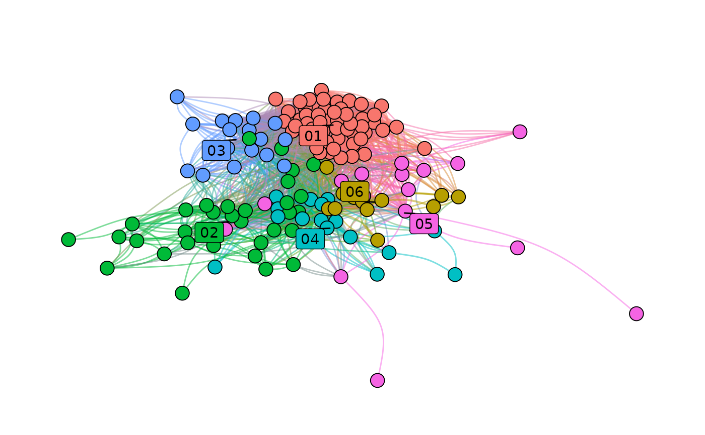

plot_networks() draws a network from the columns created by the
previous steps of the pipeline: coordinates (layout_networks()),
colours (color_networks()) and cluster labels (name_clusters() and
prepare_label_networks()). Edges are drawn as light arcs whose width
follows their weight, nodes as points whose size follows
node_size_column, and each cluster gets a label at its centre of
gravity.
It is meant as a quick, ready-made figure. For exploration, the
interactive app of launch_network_app() is more convenient; for a
figure to publish, print_plot_code = TRUE prints the ggraph code, which
can be copied and adapted.
Usage
plot_networks(
graphs,
x = "x",
y = "y",
cluster_label_column = "cluster_label",
node_size_column = "node_size",
color_column = "color",
color_networks = FALSE,
color = NULL,
print_plot_code = FALSE
)Arguments
- graphs
A
tbl_graphor a list oftbl_graphs.- x, y
Character scalars, the node columns with the coordinates (
"x"and"y"by default).- cluster_label_column
Character scalar, the node column with the labels to display:
"cluster_label"(name_clusters()) by default, or a cluster column such ascluster_leiden.- node_size_column
Character scalar, the numeric node column giving the size of nodes:
"node_size"by default (seecompute_sizeinbuild_network()). IfNULLor absent, all nodes have the same size.- color_column
Character scalar, the column with the colours of nodes and edges (
"color"by default, fromcolor_networks()).- color_networks
Logical. If
TRUE,color_networks()is run first, withcluster_label_columnas the categories.- color
With
color_networks = TRUE, the colours passed tocolor_networks().- print_plot_code
Logical. If
TRUE, prints the ggplot2/ggraph code of the plot.
Value
For a tbl_graph, a ggplot object. For a list of graphs, the
list itself, in which each graph carries its plot in an element plot
(graphs[[1]]$plot).
Details
Missing pieces are filled in: labels are positioned with
prepare_label_networks() when label_x is absent, and edges without a
weight column get a weight of 1. Labels are drawn with ggrepel, which
must be installed.
Examples
# \donttest{
network <- build_network(
nodes = subset(Nodes_stagflation, source_type == "Stagflation"),
directed_edges = Ref_stagflation,
source_id = "source_id",
target_id = "target_id",
projection_method = "structured",
cooccurrence_method = "coupling_similarity",
edges_threshold = 1
)
network <- add_clusters(
network,
clustering_method = "leiden",
objective_function = "modularity",
seed = 123,
verbose = FALSE
)
set.seed(1)
network <- layout_networks(network, node_id = "source_id", layout = "fr")
network <- color_networks(network, column_to_color = "cluster_leiden")
if (requireNamespace("ggrepel", quietly = TRUE)) {
plot_networks(
network,
cluster_label_column = "cluster_leiden",
node_size_column = NULL
)
}

# }